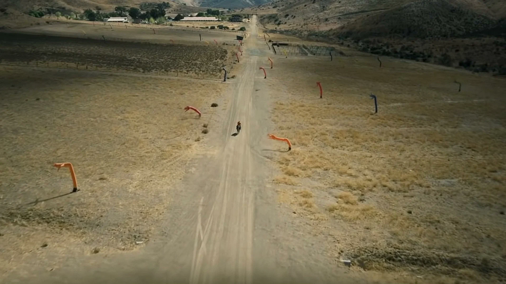
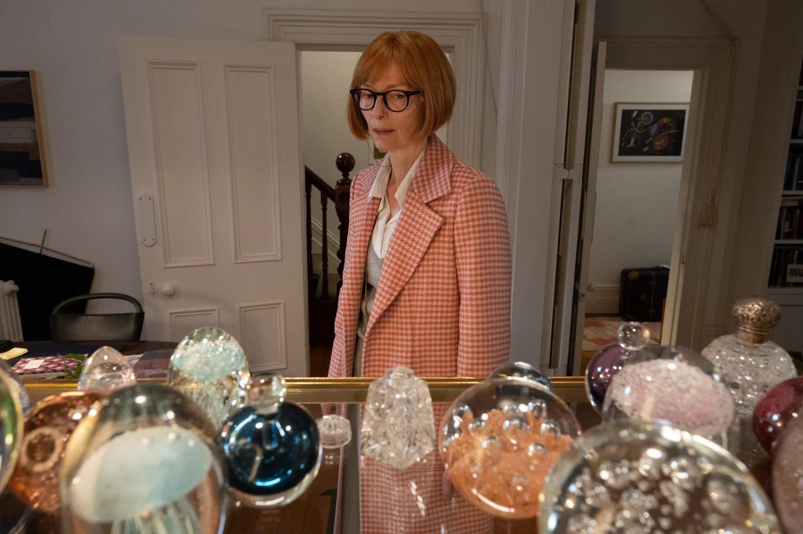
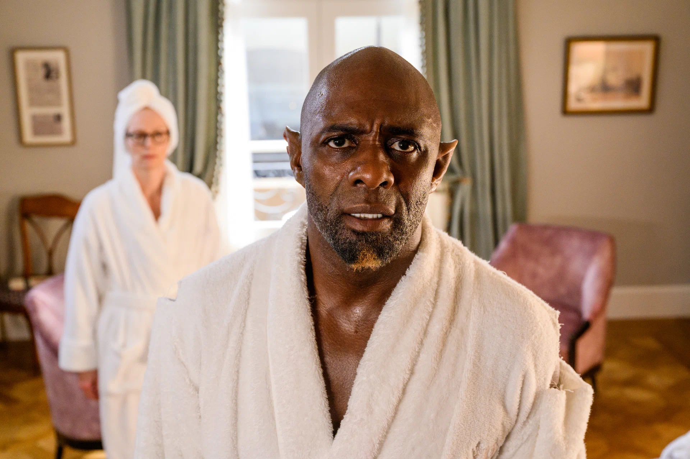
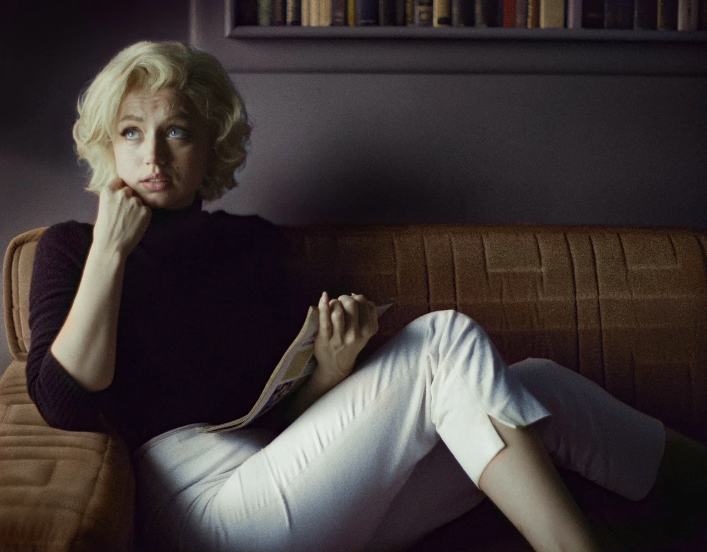
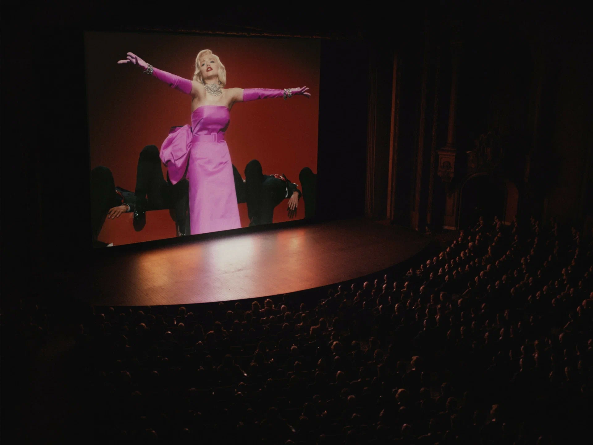
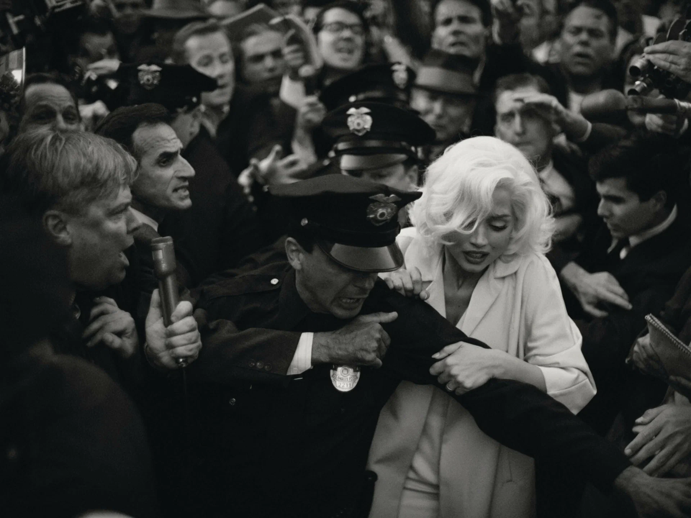

Мои любимые фильмы
Нет(2022)
Краткое содержание фильма
Через полгода после смерти отца в результате нелепого несчастного случая брат с сестрой, Оджей и Эмеральд, пытаются удержать на плаву семейный бизнес — ранчо с лошадьми для съёмок в кино и рекламе. Дела идут из рук вон плохо, часть животных пришлось продать, и Оджей уже подумывает избавиться и от ранчо, когда вдруг замечает в окрестностях НЛО. Ребята видят в этом возможность заработка и решают заснять его любой ценой.
Кадры из фильма
.webp)
.webp)
О Фильме
| Год | 2022 |
| Страна | США |
| Жанр | фантастика, ужасы |
| Режиссер | Джордан Пил |
Три тысячи лет желаний
Краткое содержание фильма
Британская лингвистка Алетея прилетает из Лондона в Стамбул, чтобы прочитать курс лекций по нарративу. Уже в аэропорту женщина начинает видеть загадочных существ, а когда в одной из многочисленных сувенирных лавочек покупает стеклянную бутылочку и пытается её отмыть, перед ней возникает самый настоящий джинн. Алетея не торопится загадывать три желания, ей интереснее послушать его историю. Джинн начинает свой рассказ.
Кадры из фильма
 О Фильме
| Год | 2022 |
| Страна | Австалия, США |
| Жанр | фэнтэзи, драма, мелодрама |
| Режиссер | Джордж Миллер |
Блондинка(2022)
Краткое содержание фильма
В те редкие часы, когда сбрендившая мама не пыталась сжечь или утопить маленькую Норму Джин, она рассказывала дочке, что её отец — голливудская знаменитость и богач, который временно не может принимать участие в их жизни. Маму посадили в сумасшедший дом, Норма Джин выросла, взяла псевдоним Мэрилин Монро, но даже когда стала самой популярной блондинкой Голливуда и секс-символом 1950-х, всё равно продолжала поиски анонимного отца.
Кадры из фильма
  О Фильме
| Год | 2022 |
| Страна | США |
| Жанр | биография, драма |
| Режиссер | Эндрю Доминик |